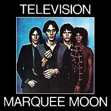
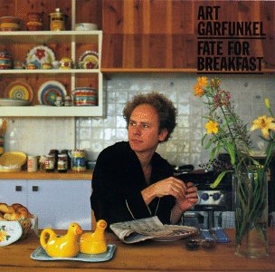
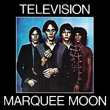
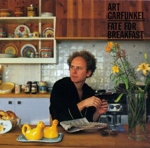
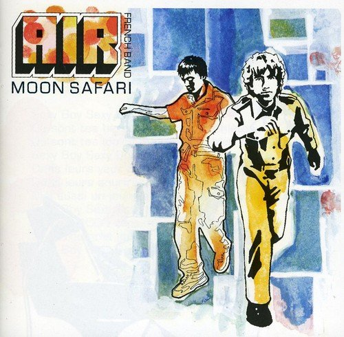
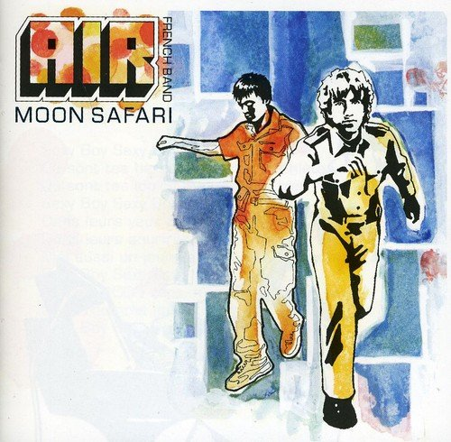
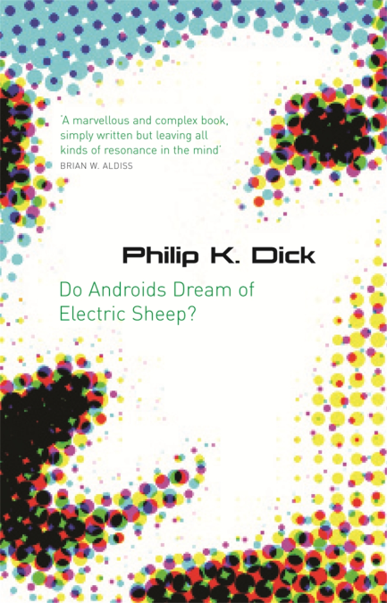
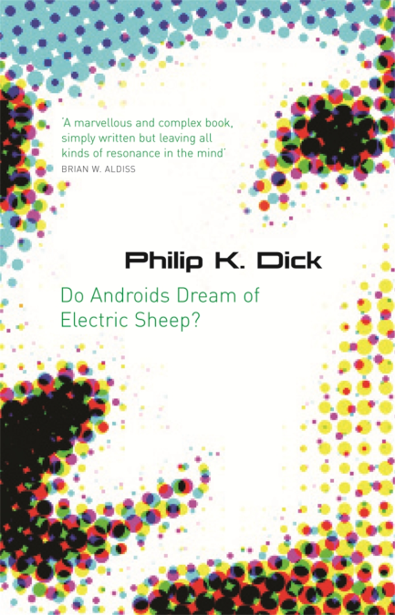

About
(a little blog)
I like running
I've been running for fun in my free time (off and on) for years but decidced to try to run a half marathon by the end of 2022 after I had graduated from uni but ended up doing two because I liked the training so much. I Plan on my first full marathon by the end of 2023
Music
I'm a massive music fan and am always looking out for cool albums i've never heard before. I learned how to play guitar so I could play Beatles, Lou Reed and Leonard Cohen songs.
I made this little image carousel, these are some of the albums I like:


 



 

Films
I try to watch as many different kinds as possible, from different decades and from different parts of the world. I really like french new wave and have recently loved watching Buster Keaton films.


Books
I've been into sci-fi and horror for a long time but had mostly stopped. Getting into A Song of Ice and Fire during lockdown got me back into reading again. I've recently started branching out with authors and have been enjoying Jane Austen and Emily Dickinson (who reminds me a lot of Leonard Cohen). Also, Borges' short story collections have been the best books I've read in years.
 
